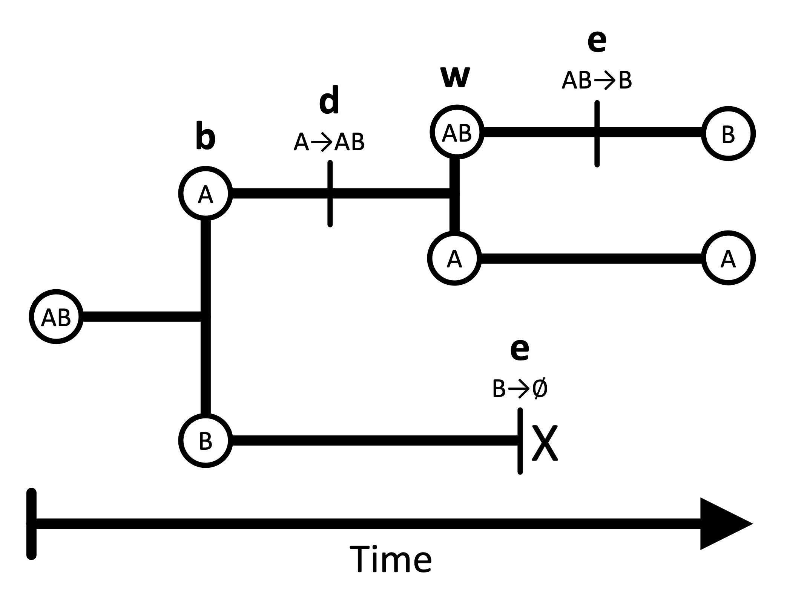
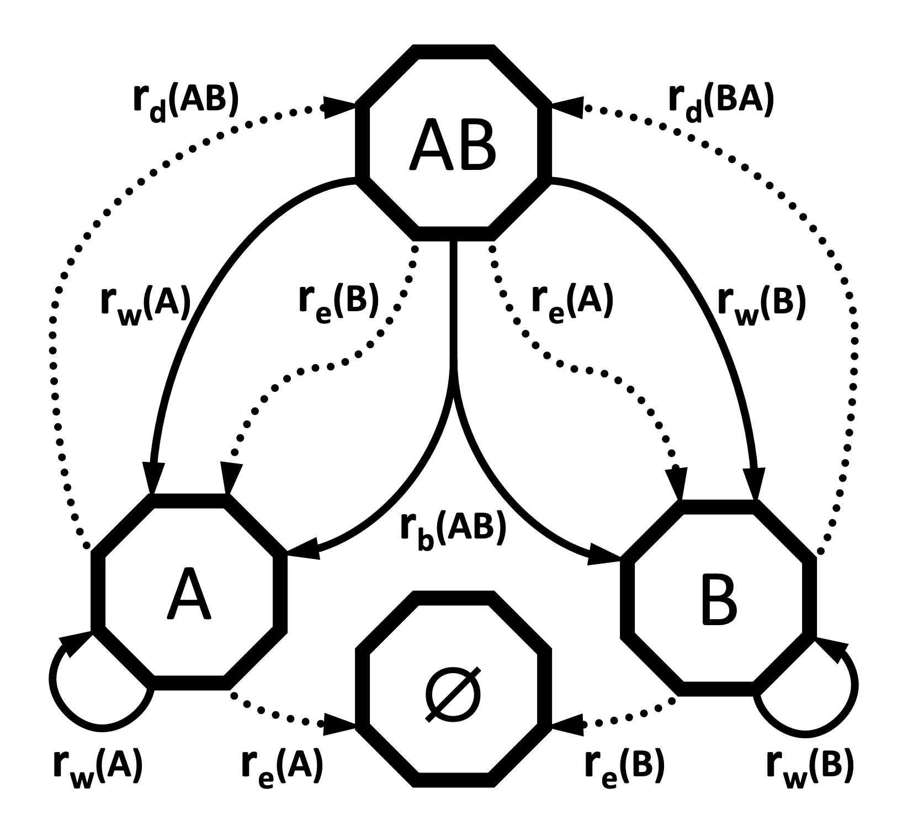

Haz clic en la imagen para ver el PDF de la presentación
Introducción
El modelo GeoSSE (Geographic State Speciation and Extinction) es un modelo filogenético diseñado para estudiar cambios biogeográficos a lo largo del tiempo evolutivo (Goldberg et al. 2011). Este modelo permite explorar cómo las tasas de diversificación (especiación y extinción) y de dispersión varían entre diferentes regiones geográficas.
En GeoSSE, el “estado” de un linaje representa su rango geográfico, el cual puede estar compuesto por una o más regiones discretas. Por ejemplo, en un escenario con dos regiones (A y B), hay tres rangos geográficos posibles: A, B, y AB.
Los linajes pueden dividirse y cambiar de estado a lo largo del tiempo evolutivo mediante cuatro procesos fundamentales:
Especiación entre regiones (b).- Este evento ocurre cuando una especie con un rango amplio (por ejemplo, AB) se divide en dos especies, cada una ocupando una sola de las regiones. Por ejemplo, el ancestro con rango AB se divide en especies hijas con rangos A y B. Este proceso es simétrico: la separación entre A y B es equivalente a la separación entre B y A.
Dispersión entre regiones (d).- La dispersión permite que una especie expanda su rango geográfico hacia una nueva región. La tasa de expansión es la suma de las tasas de dispersión entre cada par de regiones. Por ejemplo, una especie con rango A que se dispersa hacia B terminará con rango AB.
Especiación dentro de una región (w).- Este evento genera dos linajes hijos, donde uno hereda todo el rango ancestral (que puede ser una o más regiones), y el otro hereda una sola región del rango ancestral. Por ejemplo, si la especie ancestral tenía el rango AB, una hija podría conservar AB, mientras que la otra tendría A.
Extinción local (extirpación) (e).- La extinción hace que una especie pierda una región de su rango geográfico. Por ejemplo, una especie con rango AB puede extinguirse en la región A, quedando con rango B.

La especiación dentro de una región y la especiación entre regiones son procesos cladogenéticos que generan nuevos linajes filogenéticos. Estos eventos pueden resultar en especies hijas que ocupan rangos diferentes al de la especie ancestral.
La extinción y la dispersión, en cambio, son procesos anagenéticos que ocurren a lo largo de las ramas del árbol filogenético. La extinción y la especiación dentro de regiones ocurren en una sola región, mientras que la dispersión y la especiación entre regiones involucran dos o más regiones.
⚠️ Nota: El modelo estándar de GeoSSE no permite otros tipos de eventos evolutivos. Por ejemplo, no se permite que una especie ancestral con un rango amplio produzca dos hijas que ambas conserven el rango completo (es decir, no se permite especiación con simpatría total en rangos amplios). Además, GeoSSE solo permite que ocurra un único evento por instante de tiempo.
Parámetros del modelo GeoSSE
El modelo GeoSSE permite que cada región o par de regiones tenga su propia tasa para cada uno de los procesos evolutivos.
Por ejemplo:
La tasa de especiación dentro de la región A puede ser distinta de la tasa de especiación dentro de la región B.
La tasa de dispersión de A a B no tiene por qué ser igual a la tasa de dispersión de B a A.
Representación de las tasas en el modelo
Al construir el modelo GeoSSE en RevBayes, representaremos estas tasas mediante vectores y matrices:
rw: Vector de tasas de especiación dentro de cada región
re: Vector de tasas de extinción para cada región
rb: Matriz de tasas de especiación entre regiones
rd: Matriz de tasas de dispersión entre regiones
Diagrama de transición

El diagrama de transición del modelo GeoSSE para dos regiones (basado en la Figura 1 de Goldberg et al. 2011) muestra:
Procesos anagenéticos (extinción y dispersión) representados con flechas punteadas.
Procesos cladogenéticos (especiación dentro y entre regiones) representados con flechas continuas.
Este esquema facilita visualizar cómo los linajes cambian de estado y cómo se forman nuevos linajes bajo diferentes escenarios geográficos.
GeoSSE como modelo SSE
El modelo GeoSSE forma parte de una clase más amplia de modelos conocidos como modelos SSE (State-dependent Speciation and Extinction). Estos modelos permiten que el estado de un carácter discreto (en este caso, el rango geográfico) influya en las tasas de:
Especiación
Extinción
Transición entre estados
Otros ejemplos importantes de modelos SSE incluyen:
BiSSE: para caracteres binarios (e.g., presencia/ausencia de una característica)
ClaSSE: permite cambios en el estado del carácter durante eventos de cladogénesis
El modelo GeoSSE es en realidad un caso especial del modelo ClaSSE, estructurado y parametrizado específicamente para escenarios biogeográficos.
Aplicación del modelo GeoSSE en RevBayes
Este tutorial explica paso a paso cómo realizar un análisis GeoSSE en RevBayes. Utilizaremos como ejemplo el caso del género Kadua, distribuido en las islas de Hawái.
En particular, se considerarán dos regiones:
Islas antiguas
Islas jóvenes
📝 Nota: Aunque este tutorial se basa en un análisis biogeográfico con dos regiones, el modelo está diseñado para ser escalable a más regiones. En general, GeoSSE puede aplicarse hasta a 8 regiones (lo que implica 255 combinaciones posibles de rangos), aunque pueden requerirse optimizaciones adicionales.
En este caso, agrupar las islas hawaianas en solo dos categorías nos permite enumerar fácilmente todas las tasas del modelo y facilitar la implementación.
🐳 Usar Phylo_Docker
📥 Paso 1: Descargar la imagen según tu procesador
💻 Si estás en una Mac con chip Apple (M1, M2, M3)
Tu arquitectura es arm64. Ejecuta en la terminal:
docker pull sswiston/phylo_docker:slim_arm64
🖥️ Si estás en una PC con procesador Intel o AMD
Tu arquitectura es amd64 (también llamada x86_64). Ejecuta:
docker pull sswiston/phylo_docker:slim_amd64
📥 Paso 2: Obtener los datos de la imagen Phylo_Docker
Conocer los datos de la imagen con el siguiente comando:
docker images
Imagen Docker: sswiston/phylo_docker
TAG: basic_arm64
ID de imagen: e7447322ee8d
🚀 Paso 3: Ejecutar el contenedor con un volumen
Un volumen permite compartir archivos entre tu sistema operativo y el contenedor de Docker. En este caso, vas a montar la carpeta del proyecto en el contenedor para que puedas editar y guardar tus archivos desde afuera y usarlos dentro del contenedor.
Abre la Terminal y ejecuta:
docker run -it--name phylodocker -v /Users/cristoichkov/Documents/patrones_filogeneticos:/home/patrones_filogeneticos sswiston/phylo_docker:slim_arm64 /bin/sh
Esto te abrirá una terminal dentro del contenedor.
🔍 Explicación parte por parte:
Parte
Significado
docker run
Ejecuta un nuevo contenedor
-it
Modo interactivo + terminal (equivale a --interactive --tty)
--name
Asignar un nombre al contenedor
-v /Users/pc:/home/contenedor
[ruta_local]:[ruta_en_el_contenedor]
sswiston/phylo_docker:slim_arm64
Imagen que vas a ejecutar arm64 o amd64
/bin/sh
Ruta al programa shell estándar
🔸 Para salir del contenedor:
exit
▶️ Volver a entrar a un contenedor ya creado
1.- Verifica que el contenedor existe:
docker ps -a
2.- Inicia el contenedor de nuevo:
docker start -ai phylodocker
-a lo adjunta a la terminal
-i lo pone en modo interactivo
⏹️ Para detener un contenedor:
docker stop phylodocker
🧽 Para eliminar un contenedor:
Antes de poder borrar una imagen, debes eliminar todos los contenedores que la usen. Eliminar el contenedor:
docker rm phylodocker
🗑️ Para eliminar una imagen Docker:
Verifica imágenes disponibles:
docker images
Elimina la imagen:
docker rmi sswiston/phylo_docker:basic_arm64
🚀 GeoSSE en RevBayes
📂 1. Archivos necesarios
Descarga y guarda los archvios en tu carpeta de proyecto
Si el contenedor ya existe pero está detenido, puedes volver a entrar con:
docker start -ai phylodocker
🏠 3. Navega a la carpeta donde está tu script
Ya dentro del contenedor, ve a la carpeta donde guardaste el script .Rev. Por ejemplo:
cd /home/patrones_filogeneticos/scripts
📜 4. Correr el script .Rev desde RevBayes
Una vez dentro de la carpeta de scripts, ejecuta:
rb geosse.Rev
🧬 Código en R para graficar
# Cargar las librerías necesariaslibrary(RevGadgets)library(ggplot2)# Ruta al árbol con estados ancestralestree_file <-"../docs/u2_PatBio/geosse/out/ase.tre"# Leer los estados ancestrales e interpretar los valoresstates <-processAncStates(tree_file, state_labels =c("0"="Islas antiguas", "1"="Islas jóvenes", "2"="Ambas regiones"))# Graficar los estados ancestrales más probables (MAP)plotAncStatesMAP(t = states,node_size =2,node_size_as =NULL) + ggplot2::theme(legend.position ="bottom",legend.title =element_blank())